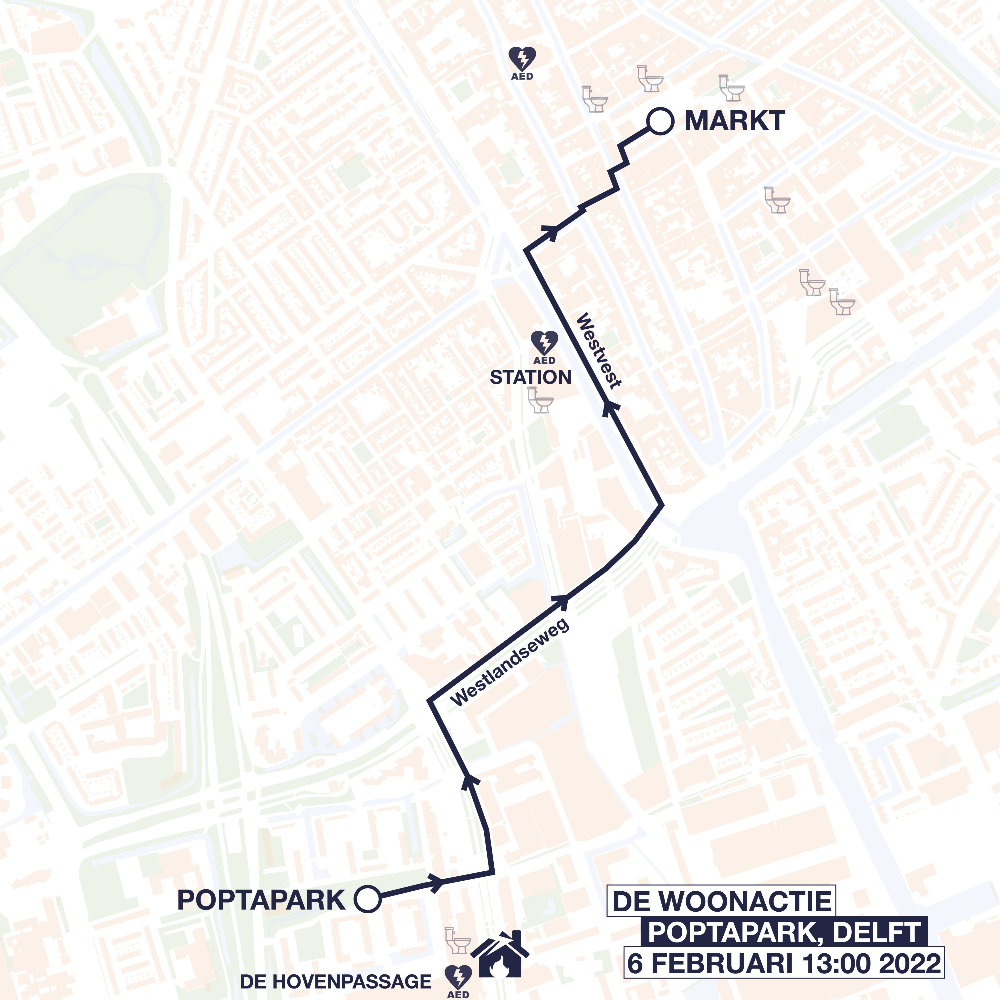

DE ROUTE VOOR ZONDAG
Het is bijna zover: zondag 6 februari gaan wij de straat op om ons te laten horen tegen de kunstmatige wooncrisis.
De WoonActie begint om 13:00 in het Poptapark. Na het podiumprogramma met verschillende sprekers gaan wij met z’n allen door de Delftse straten naar de Markt. Iedereen die ons en de beweging steunt is van harte welkom aan te sluiten.

COVID-MAATREGELEN
Wij bevinden ons nog steeds in een pandemie. Daarom dringend advies:
- Blijf bij klachten thuis
- Houd altijd 1,5 meter afstand
- Draag een mondkapje
- Andere toegankelijkheidsinformatie volgt!
De vrijwilligers van sfeerbeheer deelt ook mondkapjes uit.
Kan je niet aanwezig zijn op de WoonActie? Wees niet getreurd! Ons protest zal te volgen zijn via de livestream op YouTube waarvan de link gauw volgt.
Schrijf -en NGT Tolk aanwezig.